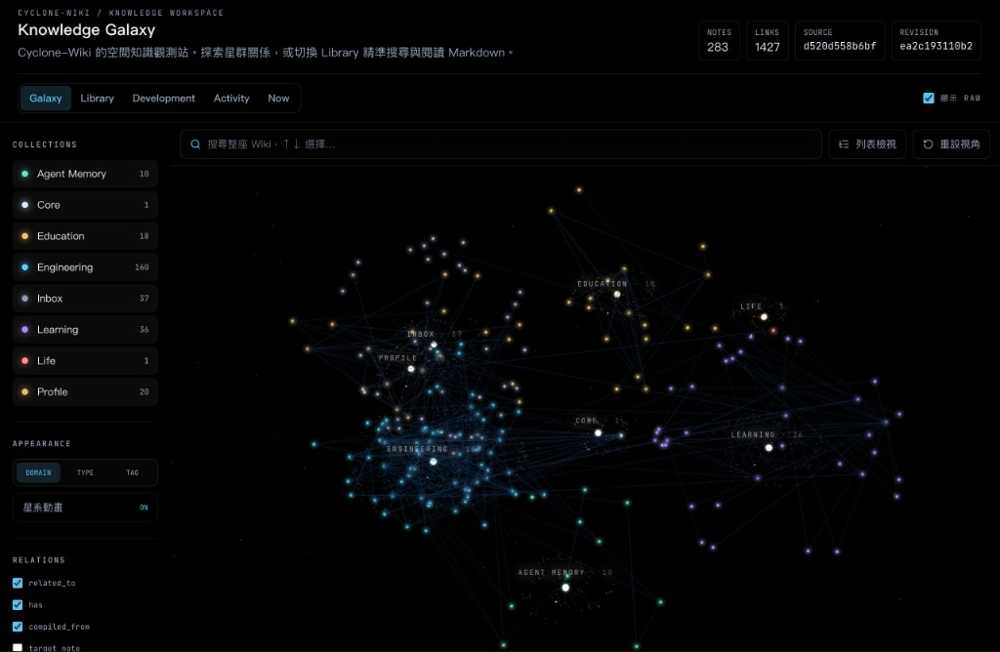
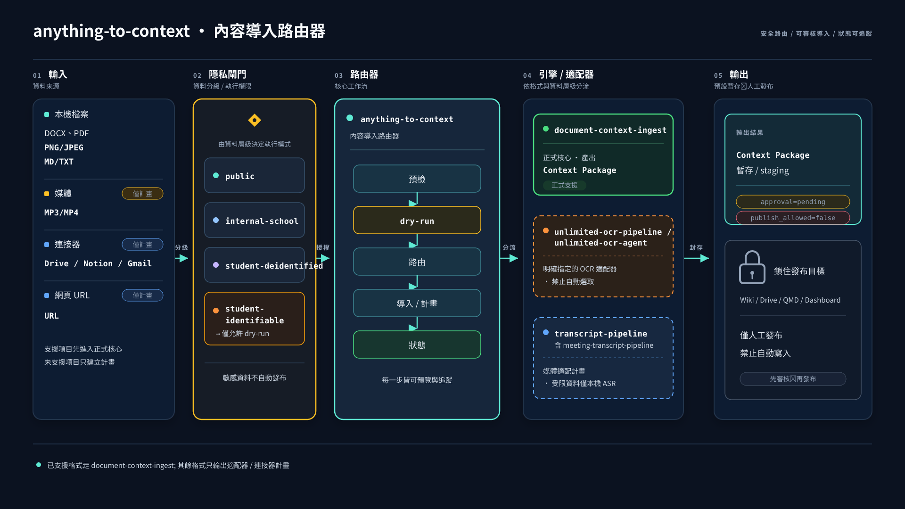
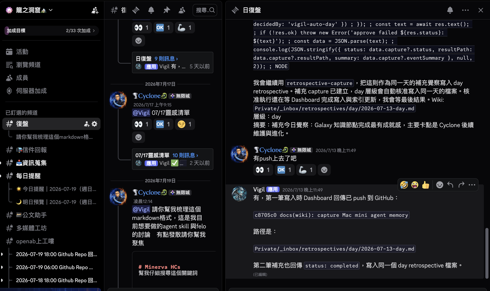

兩週 Agent 開發衝刺
不是零散修 bug。
主線是：知識可見 → Agent 會 intake → Runtime 可升級。
來源：GitHub · Cyclone-Wiki · Cursor／Codex session
四個核心系統＋兩條側翼
工作集中在 Dashboard／Wiki／agent-config／Hermes；側翼是 Deck 與 KIAO 學習產出。

Wiki 從「文件庫」變成可探索的控制面
283 notes · 1427 links · Engineering 160 是最大星群。節點可搜、可讀、可連。
能用、敢用、可搜
MVP 之後補的是 UX、安全邊界、Agent 可讀性——讓星系敢天天用。
鍵盤搜尋與聚焦、小螢幕 Library 收合、show-raw 開關。
Owner graph 雙重拒絕、fail-closed 503、禁止用 query 偷升權。
note-level retrieval、圖譜鄰居、wiki-api.v1 給 Agent CLI／MCP。

document-context-ingest → anything-to-context → deck skills VC
單一入口先過隱私閘門；正式核心建 Context Package；OCR／轉錄只當明確適配器。一律暫存，人工才發布。
Core 與 Private 裡面有什麼？
這是「地圖」——記每格放什麼就好，不用背英文檔名。
Core — 工程與營運
Private — 個人與 Agent
Cyclone-Wiki 是正式圖書館；OpenWiki 是研究助理。Core＝工程營運；Private＝個人與 Agent 工作桌。

對話 → 日復盤 → GitHub push
OpenAB／Luna 升級可跑；Hermes 採 runtime-first（先看 live → replay patch）。覺察不會蒸發。
Candidate → Radar → Issue → PR
Development Candidate lifecycle 打通：Wiki 候選 → Dashboard radar → Hermes 路由 → 可追蹤 PR。
inbox／agent-capture 標成 candidate
Dashboard Development radar
Issue-first → PR（含 Discord idea capture）
Deck · KIAO · 個人知識
localhost Codex OAuth presenter 加固；互動簡報 runtime 可講可助教。
EP10 整合與眺望入庫；P0 system filler 作業站。
個人自畫像 raw／extracted；與 Galaxy owner graph 對接。
一眼看完成／進行／下一步
| 主題 | 已上線Knowledge Galaxy MVP · Vigil 復盤閉環 |
|---|---|
| Skills | 已入庫anything-to-context／document-context-ingest · 驗收掃描件 privacy |
| OpenWiki | 決策完成角色邊界定了 · 下一步 OpenRouter 非 Codex 路線 |
| Runtime | 可升級OpenAB／Luna · Hermes runtime-first replay |
| 閉環 | 初成Candidate radar · Discord idea capture |
讓 Agent 長記憶，也讓人看得到。
- 下一棒 1Galaxy 深鏈 UX（既定 #85–88）
- 下一棒 2OpenWiki × OpenRouter 驗證
- 下一棒 3Context Package 人工審核節奏跑穩
謝謝 · 歡迎問「你實際怎麼用」